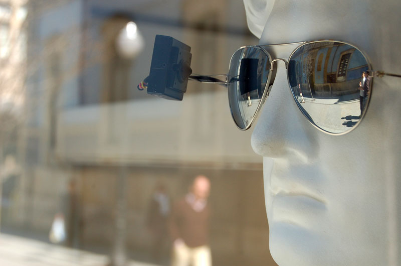
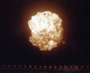
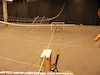

people doing strange things with electricity
+++++++
what: dorkbot-nyc meeting
where: Location One (Greene between Canal & Grand)
when: Wednesday, 04 May 2011, 7-9pm
$$$: $$$FREE$$$ (donations to Location One appreciated!)
+++++++
The 30230223rd dorkbot-nyc meeting took place at 7pm on Wednesday, May 4th, 2011 at Location One in SoHo. It was the last meeting of the season. THANKS!
The meeting was free and open to the public. PEOPLE BROUGHT SNACKS AND DRINKS TO SHARE!!! WE WERE HUNGRY!!!
+++++++
It featured the tautochronistic and (broken) supersymmetrical:

Ben Dierckx: Perceived perception
I am making a series of works that try to evoke the idea of awareness of one's own perception. Through playful installations I try to let the public experience their own point of view in relation to that from a camera, which films the same space they are in. Creating a mental space between your sensory perceptions and your consciousness of it is an ancient spiritual practice. During this talk I'd like to investigate the relation between the electronic and interactive arts and a possible spiritual "message". I will present my work as an example and also a curatorial project called "Only the spirits are awake".
http://bendierckx.com/
Derek + Mira Hunter: 65 Cameras and an Electric Pulse
Derek and Mira Hunter have collaborated on a series of projects that utilize their custom 360-degree bullet time camera to explore the fleeting nature of transformation by arresting and reanimating time. Their latest experiment, "Time Piece" features a series of gas explosions.
http://mirahunter.com
Emmanuel Ferrand: A monocord, doing strange things with electricity: Harmonics, feedback, bifurcations, chaos.
The monocord (just a simple vibrating string) is, since Pythagoras, a universal paradigm in music theory. When interfaced with an elementary electro-mechanical contraption, it may shift towards a strange harmonic behavior... This is a variation on a theme by the American composer Alvin Lucier. I will quickly review the historical context, and I will try to show the artistic potential of such physico-mathematical phenomena (I will stay away from the math technicalities).
http://orquestre.org
NEXT MEETING: 07 September 2011